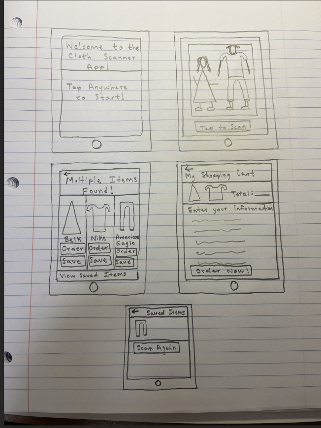
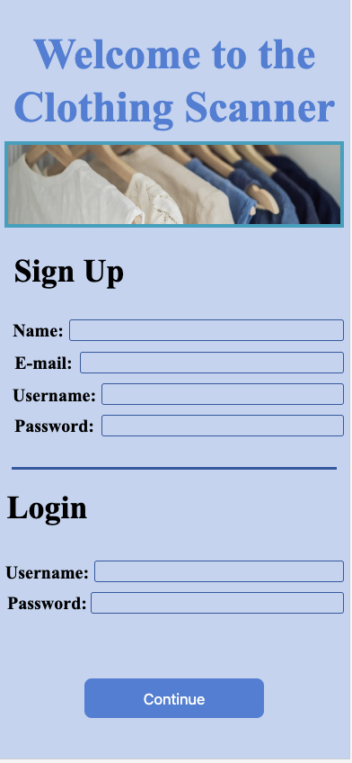

Problem Statement: Clothing

Our users need a way to find clothing that they see celebrities on TV or strangers wearing in public. It is always frustrating when you see a TV actor wearing a shirt that you like, but it is impossible to find it online. Similarly, it is a daunting task in public to ask a stranger where they bought a certain piece of clothing.
Brainstorming: Word Cloud

This is a brainstorming diagram that allows the user to look at the possible uses of this app.
Personas for Clothing App

Personas of a typical user on our app
Cloth Scanner Story Board

Problems that our typical user might go through.
Cloth Scanner Sketches
Ideas for how our application might function.
Cloth Scanner: Paper Prototype

A paper representation of how the app, Cloth Scanner, is going to function.
Cloth Scanner: App Prototype
Hi fidelity Prototype of how our App Cloth scanner would run on typical iPhone